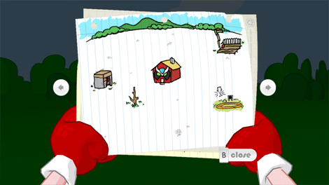
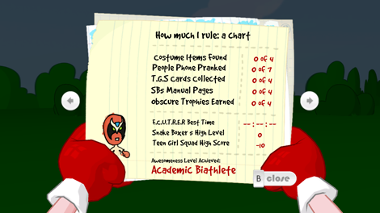

8 |
Interfaz de pantalla |
 |
Mientras juegas una partida, tienes acceso a:
 El inventario de Strong Bad muestra lo que Strong Bad lleva encima. Para usar un objeto que está en el inventario, selecciónalo apuntando a él y pulsando

El mapa muestra los lugares que puedes visitar. Aparecerán nuevos lugares en el mapa durante la partida, así que procura mirarlo a menudo. Para ir a un lugar nuevo, apunta al lugar al que quieres ir y pulsa 
Apunta a las flechas que están a la derecha y a la izquierda del mapa para pasar página. Aquí verás una tabla que muestra el nivel de genialidad de Strong Bad (basado en tus logros durante toda la partida) y una lista de los objetos que has encontrado esparcidos por el mundo. Estos objetos no son necesarios para completar el juego, pero pueden hacerlo más divertido, ¡así que mira a menudo estas páginas para asegurarte de que has hecho todo lo que puedes hacer! Para volver al juego, apunta a Close en la parte inferior del mapa y pulsa
 El modo foto te permite hacer fotos en casi cualquier momento del juego. Mientras estás en el modo foto, puedes utilizar las siguientes funciones:
Puedes compartir estas fotos con tus amigos Wii usando el portátil de Strong Bad. |


 |
 |
 |